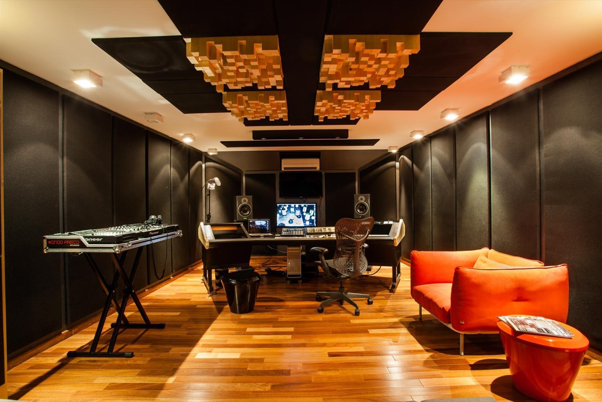
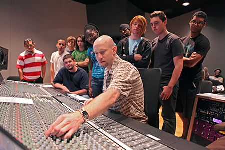

Fundamentos do Áudio Digital
🎧 Bem-vindo ao AudioLearn
Sua jornada pelo mundo do áudio digital começa aqui!
O que é Áudio Digital?

O áudio digital é a representação de sons através de números binários. Ao contrário do áudio analógico, que usa variações contínuas de voltagem, o áudio digital captura "fotografias" do som em intervalos regulares.
🔊 Ouça a Diferença
Exemplo de áudio digitalizado em diferentes qualidades:
💡 Conceitos-Chave
- Amostragem: Captura de valores do sinal em intervalos regulares
- Quantização: Conversão de valores contínuos em discretos
- Taxa de Bits: Quantidade de dados por segundo (bitrate)
📊 Amostragem e Digitalização
Como transformamos ondas sonoras em números
O Processo de Amostragem

22.050 Hz
Qualidade de rádio AM
44.100 Hz
Qualidade de CD (padrão)
96.000 Hz
Alta resolução
⚠️ Teorema de Nyquist-Shannon
Para capturar adequadamente um sinal, a taxa de amostragem deve ser pelo menos o dobro da frequência máxima do sinal.
$$f_{amostragem} ≥ 2 × f_{máxima}$$
💾 Formatos de Áudio Digital
Entendendo os principais formatos e suas características
Tipos de Formatos
Animação
WAV / AIFF
Sem Perda- Sem compressão
- Qualidade máxima
- Arquivos grandes
- Uso: Produção profissional
MP3
Com Perda- Compressão eficiente
- Perda de dados
- Arquivos pequenos
- Uso: Distribuição, streaming
FLAC
Sem Perda- Compressão sem perda
- 50-70% do tamanho WAV
- Qualidade preservada
- Uso: Arquivamento, audiófilos
MIDI
Instruções- Não é áudio, são comandos
- Arquivos minúsculos
- Editável nota por nota
- Uso: Produção musical
🎹 Demonstração MIDI
Música sintetizada a partir de instruções MIDI:
Esta música foi gerada a partir de um arquivo MIDI de apenas 38KB, mas reproduz uma melodia completa!
| Formato | Qualidade | Tamanho (3 min) | Aplicação |
|---|---|---|---|
| WAV | ⭐⭐⭐⭐⭐ | ~30 MB | Edição profissional |
| FLAC | ⭐⭐⭐⭐⭐ | ~18 MB | Arquivamento |
| MP3 (320kbps) | ⭐⭐⭐⭐ | ~7 MB | Distribuição |
| MP3 (128kbps) | ⭐⭐⭐ | ~3 MB | Streaming |
⭐ Qualidade do Áudio Digital
Fatores que determinam a qualidade final
Profundidade de Bits (Bit Depth)
Fatores de Qualidade
Taxa de Amostragem
Determina a frequência máxima capturável
Profundidade de Bits
Define a faixa dinâmica e ruído
Taxa de Bits (Bitrate)
Quantidade de dados por segundo
Algoritmo de Compressão
Método de redução de tamanho
✅ Configurações Recomendadas
- Produção Musical: 48 kHz / 24 bits / WAV
- Masterização: 96 kHz / 24 bits / WAV
- Distribuição: 44.1 kHz / 16 bits / FLAC ou MP3 320kbps
- Podcasts: 44.1 kHz / 16 bits / MP3 128-192kbps
🎚️ Demonstração Interativa
Ouça o mesmo áudio em diferentes qualidades:
🎵 Aplicações do Áudio Digital
Como o áudio digital é usado no mundo real
Áreas de Aplicação
Produção Audiovisual
Cinema, TV, streaming - sincronização com vídeo, edição multipista, efeitos sonoros.
Games
Áudio interativo, síntese em tempo real, espacialização 3D, compressão adaptativa.
Podcast

Gravação, edição, remoção de ruído, compressão para distribuição online.
Produção Musical
DAWs, MIDI, plugins, masterização, distribuição digital em plataformas de streaming.
Telecomunicações

VoIP, videoconferência, codecs de baixa latência, supressão de eco.
Análise Científica
Análise espectral, ultrassom, processamento de sinais, reconhecimento de padrões.
📊 Caso de Estudo: Streaming Musical
Plataformas como Spotify usam formatos como OGG Vorbis e AAC para balancear qualidade e consumo de dados. A taxa de bits se adapta automaticamente à velocidade da conexão.
🛠️ Ferramentas Profissionais
🎯 Quiz Final
Teste seus conhecimentos sobre áudio digital!
Instruções do Quiz
- ✓ O quiz contém 5 perguntas selecionadas aleatoriamente
- ✓ Escolha a alternativa que considera correta
- ✓ Você receberá feedback imediato após cada resposta
- ✓ Ao final, verá sua pontuação total